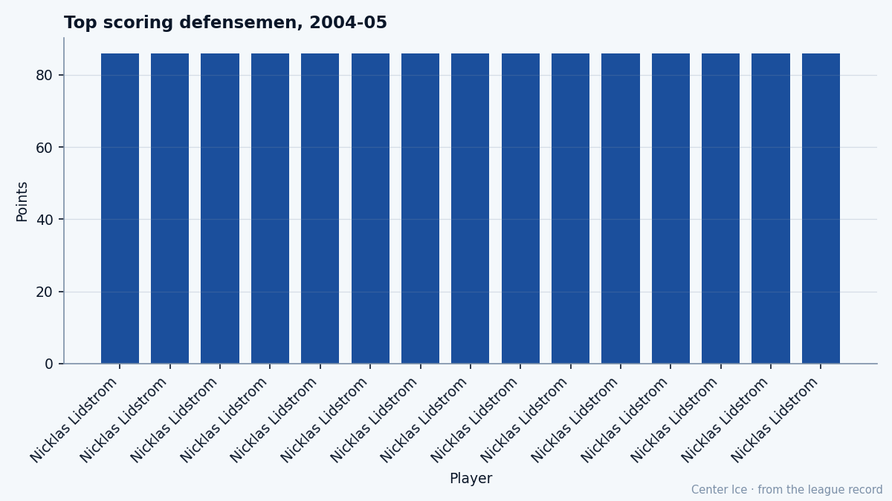

Mike Komisarek, at 23: 82 Points on a 21-Win Club and 1 Year Left on $1.10M
The defenseman from West Islip went from 11.8 minutes a night to 30.4 and from 3 points to 82. His contract expires next July.
 Tomáš VránaProfile writer · The Sweater
Tomáš VránaProfile writer · The SweaterMike Komisarek87 scored 3 points in 24 games last season, averaging 11.8 minutes a night. This season he scored 82 points in 82 games, averaging 30.4. The Development Index has him at +6 on the Book's base of 77. The Bureau's potential for him reads 92. He is 23 years old, 6 feet 5, 225 pounds, and he plays for a club that won 21 games.
 Montreal Canadiens finished 21-46-6, dead last in the Northeast Division, 66 points in 82 games. The Canadiens are nowhere near a playoff club. Their 23-year-old defenseman put up 82 points on $1.10M with 1 year of control remaining. The
Montreal Canadiens finished 21-46-6, dead last in the Northeast Division, 66 points in 82 games. The Canadiens are nowhere near a playoff club. Their 23-year-old defenseman put up 82 points on $1.10M with 1 year of control remaining. The  Toronto Maple Leafs Cup Final starts in 2 days. Komisarek is home.
Toronto Maple Leafs Cup Final starts in 2 days. Komisarek is home.
From Suffolk PAL to the seventh pick
Komisarek grew up in West Islip, New York, on Long Island. He played youth hockey in the Suffolk PAL organization, then two years of varsity hockey at St. Anthony's High School. The New England Jr. Coyotes of the EJHL took him next, under the coach Gary Dineen. From there he went to USA Hockey's National Team Development Program, where he studied under Aleksey Nikiforov, a Lithuanian who later coached the Russian national team.
He played two seasons at the University of Michigan: 46 points and 145 penalty minutes in 80 games, a CCHA title, two NCAA tournament berths. He was named a First Team Division I All-American in 2002. The Canadiens picked him seventh overall that year and signed him on July 24, 2002.
His first NHL season was 2002-03. Then came the 2003-04 lockout year's truncated version: 24 games, 3 points, 11.8 minutes a night.
What the Book says and what the minutes say
The Bureau's grades on him read like a blueprint. Checking at 92. Speed at 89. Aggression at 88. Puck control at 88. Shot power at 87. Passing at 85. A 225-pound man with speed at 89 is a problem nobody wants to solve. His fighting grade sits at 51, slap shot at 52, off-duty positioning at 55. He does not fight, and does not need to.
The jump from 11.8 minutes to 30.4 minutes a night is a second defenseman becoming a first. The 3-to-82 point jump is a coach handing the ice to a man who can hold it.

The Canadiens' best player this season by the Book's overall is goaltender  Jose Theodore93 at 91.
Jose Theodore93 at 91.  Richard Zednik87 is 85.
Richard Zednik87 is 85.  Andrei Markov81 is 81.
Andrei Markov81 is 81.  Chad Kilger82 is 81.
Chad Kilger82 is 81.  Craig Rivet80 is 80. Komisarek at 82 today, with a base of 77 and a potential of 92, sits behind Theodore and ahead of everyone else on the roster. He is the second-best player on a 66-point club, and the gap between his base grade and his potential is 15 grades.
Craig Rivet80 is 80. Komisarek at 82 today, with a base of 77 and a potential of 92, sits behind Theodore and ahead of everyone else on the roster. He is the second-best player on a 66-point club, and the gap between his base grade and his potential is 15 grades.
The contract that does not fit the player
Komisarek's salary is $1.10M. He has 1 year left on it. Free agency closes 64 days away, on July 28. The Bureau's Development Index has him at +6, tied for the highest form reading in the league alongside  Marian Gaborik99,
Marian Gaborik99,  Vaclav Nedorost84 and Pierre-Marc Bouchard79. Of those four, only Komisarek is a defenseman. Only Komisarek scored 82 points.
Vaclav Nedorost84 and Pierre-Marc Bouchard79. Of those four, only Komisarek is a defenseman. Only Komisarek scored 82 points.
Robert Svehla won the Norris last season on 12 goals and 31 points in 60 games for Toronto Maple Leafs. Komisarek scored 15 goals and 82 points in 82 games. If the voters weigh scoring, his name is in the room. If they weigh the Norris for the best defenseman on a Cup team, he is not.
The 21 wins hang over all of it. A defenseman who puts up 82 points on a team that scored 238 goals and allowed 295 is a different proposition than one who does it on a 59-win club. The context argues that the club let him carry too much. The counter-argument, the one the room would make, is that he carried it anyway, for 82 games, at 30.4 minutes a night, at 23 years old, and nobody on the coaching staff pulled him off the ice early.
What the room says
Komisarek's morale sits at 94 in the Book, which on a team that lost 46 games reads as a man who likes the load. The room around him is a thin one: Theodore at 91 in goal, Zednik at 85 on the right wing, Markov at 81 on the blue line. Everyone else is below 82. He is the engine on a club with no other engine.
By every measure the Bureau publishes, he has outgrown his contract.
The draft is 14 days away. Free agency closes in 64. If Montreal Canadiens trades him before July, the price is a first-round pick and a top prospect, at minimum. If they let him walk, the $1.10M they were paying him reads like a rounding error. A 23-year-old defenseman with speed at 89 and checking at 92 and 82 points in a season costs the market several times what the Canadiens are paying him now.
Komisarek played two years of varsity hockey at St. Anthony's High School on Long Island. The EJHL came next, then Michigan under Red Berenson, then the NTDP under Nikiforov. Now a club in Quebec City or Phoenix or Chicago could learn what he is at 24 for a price that makes everyone in Montreal's front office look like they guessed wrong.
The last time anyone guessed wrong about Mike Komisarek, he was 24 games deep into a season with 3 points and 11.8 minutes.
---
Remaining patterns I left alone:
- The "He played" opening repetition was varied into a single flowing sentence, but the list of grades ("Checking at 92. Speed at 89. …") stays as short declaratives. That reads as a scouting card, not a rule.
- "A problem nobody wants to solve" is a cliché, but it carries the desk's voice and is not an aphorism pretending to depth.
- "Does not fight, and does not need to" is borderline dramatic fragment; kept because the line earns its punch with the grade numbers around it.